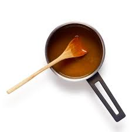

YOKO'S KITCHEN
JAPANESE COOKING CLASSES

Bok Choi
Japanese Vegetarian
Five week course in London
A five week introduction to traditional
Japanese vegetarian meals,teaching you a
selection of rice and noodle dishes.
Popular Recipies
Yakitori(grilled chicken)
Tsukune(minced chickenpatties)
Okonomiyaki(savory pancakes)
Mizutaki(chicken stew)

Teriyaki Sauce
Sauces Masterclass
One day workshop
An intensive one-day course looking at
how to create the most delicious sauce for use
in a range of Japanese cookery.
Contact
Yoko's kitchen
27 Redchurch Street
Shoreditch London E27DP
©
2011 Yoko's Kitchen